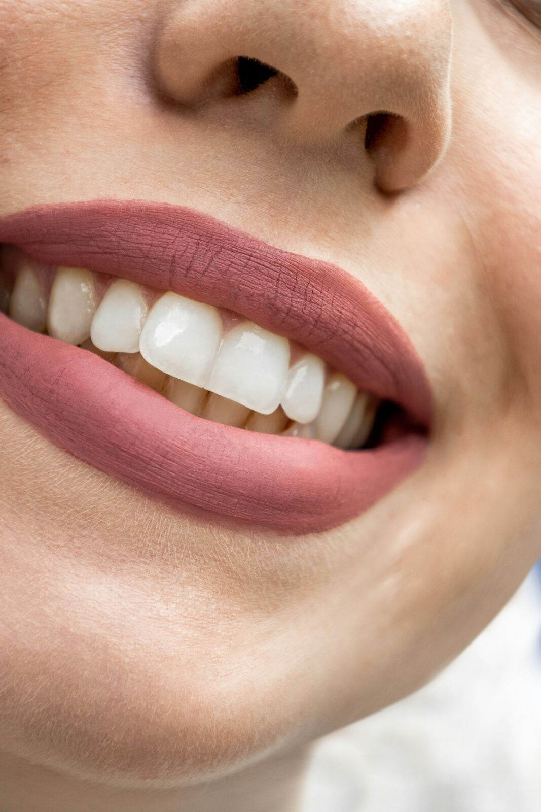

Best Teeth Whitening & Smile Care

A brighter smile is usually a stack of small habits rather than one product, so these four picks cover the stack: an everyday whitening strip, a stronger LED kit for a faster result, a sonic toothbrush for the daily baseline, and a water flosser for the gum health that whitening alone doesn't touch.
| Product | Tier | Best for |
|---|---|---|
| Purple Teeth Whitening Strips | Everyday pick | a gentle, color-correcting option for sensitive teeth |
| Auraglow LED Teeth Whitening Kit | Fast-results pick | a stronger, faster whitening treatment with an LED accelerator light |
| Philips Sonicare Electric Toothbrush | Daily baseline pick | upgrading the daily brushing that whitening results depend on |
| Waterpik Aquarius Water Flosser | Gum health pick | the gum and plaque care that whitening alone doesn't address |
1. Purple Teeth Whitening Strips
Everyday pick
Similar style shown — see the exact model and finish on Amazon.
- Design: color-correcting purple strips that neutralize yellow tones on contact, in addition to gradual whitening
- Marketed for sensitive teeth, with a lower-irritation formula than some peroxide-only strips
- Best for: a low-commitment way to test whitening strips before investing in a full kit
2. Auraglow LED Teeth Whitening Kit
Fast-results pick
Similar style shown — see the exact model and finish on Amazon.
- Design: carbamide peroxide gel applied with a mouth tray, paired with an LED accelerator light
- #1 best seller in its category with tens of thousands of ratings behind the track record
- Best for: someone who wants a noticeably faster result than strips alone, in a short at-home session
3. Philips Sonicare Electric Toothbrush
Daily baseline pick
Similar style shown — see the exact model and finish on Amazon.
- Design: rechargeable sonic toothbrush with a pressure sensor and two cleaning modes
- Includes two brush heads and a travel case for daily and on-the-go use
- Best for: the daily brushing upgrade that keeps a whitening result from fading as fast
4. Waterpik Aquarius Water Flosser
Gum health pick
Similar style shown — see the exact model and finish on Amazon.
- Design: countertop water flosser with 10 pressure settings and 7 interchangeable tips
- ADA Accepted, with one of the largest review counts of any dental tool in its category
- Best for: gum health and plaque removal along the gumline that brushing and whitening don't reach
Which one should you get?
Think of these less as competing options and more as four layers: strips or an LED kit do the actual whitening, while the toothbrush and flosser protect that result and the health underneath it. Most people get the most value starting with the LED kit for the visible change, then adding the toothbrush or flosser to make it last.
Frequently asked questions
How long do at-home teeth whitening results last?
Most at-home whitening lasts a few months to about a year depending on diet and habits — coffee, tea, and red wine are the usual culprits that shorten it, and touch-up strips are the normal way to maintain the result.
Is LED light necessary for teeth whitening to work?
No — the whitening gel is what does the work; the LED light mainly shortens the session time rather than changing the end result, so a gel-only strip can get you to the same place more slowly.
Can a water flosser replace regular flossing?
It's a strong complement rather than a full replacement for most dentists' recommendations — it's especially good for braces, implants, or anyone who finds string floss difficult, but check with your dentist if you have specific gum concerns.